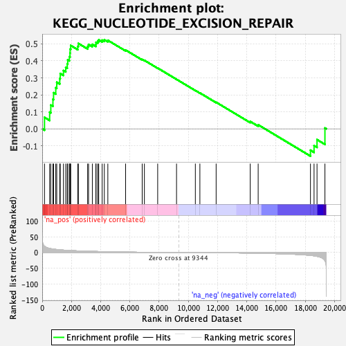
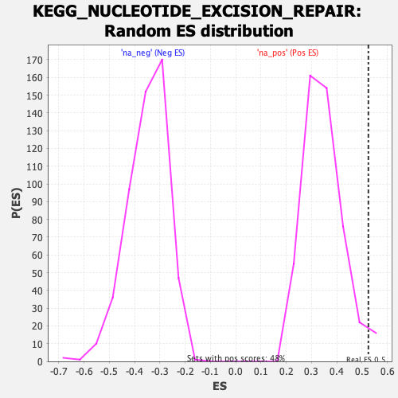

| | | Dataset | DE_genes |
| Phenotype | NoPhenotypeAvailable |
| Upregulated in class | na_pos |
| GeneSet | KEGG_NUCLEOTIDE_EXCISION_REPAIR |
| Enrichment Score (ES) | 0.5245828 |
| Normalized Enrichment Score (NES) | 1.5185732 |
| Nominal p-value | 0.03305785 |
| FDR q-value | 0.07965299 |
| FWER p-Value | 0.786 |
Table: GSEA Results Summary

Fig 1: Enrichment plot: KEGG_NUCLEOTIDE_EXCISION_REPAIR
Profile of the Running ES Score & Positions of GeneSet Members on the Rank Ordered List
| SYMBOL | RANK IN GENE LIST | RANK METRIC SCORE | RUNNING ES | CORE ENRICHMENT | | 1 | POLE3 | 157 | 20.003 | 0.0674 | Yes |
| 2 | CUL4A | 509 | 12.945 | 0.0981 | Yes |
| 3 | RAD23B | 588 | 12.175 | 0.1400 | Yes |
| 4 | POLD1 | 733 | 11.005 | 0.1741 | Yes |
| 5 | POLD3 | 777 | 10.766 | 0.2124 | Yes |
| 6 | XPA | 928 | 9.820 | 0.2418 | Yes |
| 7 | RPA2 | 996 | 9.524 | 0.2742 | Yes |
| 8 | CCNH | 1199 | 8.534 | 0.2960 | Yes |
| 9 | RFC5 | 1235 | 8.346 | 0.3257 | Yes |
| 10 | RPA1 | 1454 | 7.608 | 0.3431 | Yes |
| 11 | GTF2H4 | 1611 | 7.086 | 0.3618 | Yes |
| 12 | RFC3 | 1714 | 6.817 | 0.3823 | Yes |
| 13 | RAD23A | 1747 | 6.700 | 0.4059 | Yes |
| 14 | RFC2 | 1859 | 6.418 | 0.4244 | Yes |
| 15 | POLD2 | 1901 | 6.306 | 0.4460 | Yes |
| 16 | ERCC3 | 1910 | 6.287 | 0.4693 | Yes |
| 17 | POLE | 1951 | 6.201 | 0.4907 | Yes |
| 18 | GTF2H3 | 2434 | 5.194 | 0.4854 | Yes |
| 19 | GTF2H1 | 2474 | 5.119 | 0.5027 | Yes |
| 20 | GTF2H2 | 3110 | 4.054 | 0.4853 | Yes |
| 21 | RFC4 | 3172 | 3.955 | 0.4970 | Yes |
| 22 | POLE2 | 3431 | 3.598 | 0.4973 | Yes |
| 23 | LIG1 | 3672 | 3.320 | 0.4975 | Yes |
| 24 | ERCC8 | 3682 | 3.313 | 0.5095 | Yes |
| 25 | GTF2H5 | 3798 | 3.175 | 0.5155 | Yes |
| 26 | RPA3 | 3866 | 3.088 | 0.5237 | Yes |
| 27 | POLE4 | 4103 | 2.812 | 0.5222 | Yes |
| 28 | RPA4 | 4251 | 2.652 | 0.5246 | Yes |
| 29 | ERCC2 | 4491 | 2.394 | 0.5213 | No |
| 30 | RFC1 | 5707 | 1.405 | 0.4639 | No |
| 31 | RBX1 | 6842 | 0.764 | 0.4084 | No |
| 32 | MNAT1 | 6992 | 0.698 | 0.4033 | No |
| 33 | XPC | 7902 | 0.346 | 0.3578 | No |
| 34 | DDB1 | 9192 | 0.029 | 0.2914 | No |
| 35 | DDB2 | 10480 | -0.246 | 0.2260 | No |
| 36 | CETN2 | 10790 | -0.322 | 0.2113 | No |
| 37 | CUL4B | 11902 | -0.662 | 0.1565 | No |
| 38 | CDK7 | 14234 | -1.840 | 0.0432 | No |
| 39 | ERCC6 | 14779 | -2.259 | 0.0237 | No |
| 40 | ERCC4 | 18357 | -9.228 | -0.1259 | No |
| 41 | POLD4 | 18603 | -10.494 | -0.0990 | No |
| 42 | ERCC5 | 18806 | -12.105 | -0.0637 | No |
| 43 | ERCC1 | 19347 | -25.516 | 0.0047 | No |
Table: GSEA details [plain text format]

Fig 2: KEGG_NUCLEOTIDE_EXCISION_REPAIR: Random ES distribution
Gene set null distribution of ES for KEGG_NUCLEOTIDE_EXCISION_REPAIR